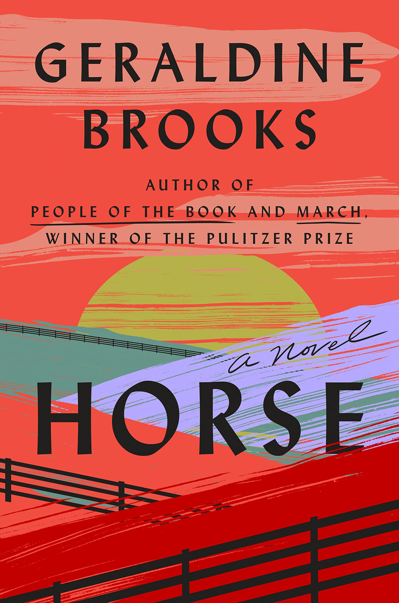

Horse

Kentucky, 1850. An enslaved groom named Jarret and a bay foal forge a
bond of understanding that will carry the horse to record-setting
victories across the South. When the nation erupts in civil war, an
itinerant young artist who has made his name on paintings of the
racehorse takes up arms for the Union. On a perilous night, he
reunites with the stallion and his groom, very far from the glamor of
any racetrack.
New York City, 1954. Martha Jackson, a gallery owner celebrated for
taking risks on edgy contemporary painters, becomes obsessed with a
nineteenth-century equestrian oil painting of mysterious provenance.
Washington, DC, 2019. Jess, a Smithsonian scientist from Australia,
and Theo, a Nigerian-American art historian, find themselves
unexpectedly connected through their shared interest in the horse—one
studying the stallion’s bones for clues to his power and endurance,
the other uncovering the lost history of the unsung Black horsemen who
were critical to his racing success.
Based on the remarkable true story of the record-breaking thoroughbred
Lexington, Horse is a novel of art and science, love and obsession,
and our unfinished reckoning with racism.